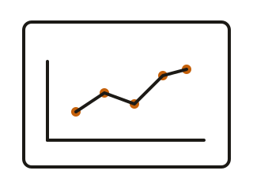
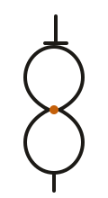
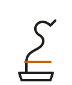
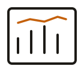

Shafin
Ahmed
Statistician & builder. I work across data,
software, and creative systems.

Analyst
Statistics · Data · ModelsCreative
Origami · Music · DesignMade
Secondary Currency
for Odoo 18
Chose ORM patches over a custom model because the client’s existing data structure could not afford a mid-deployment migration.
Tracks inventory value in BDT and USD simultaneously for a Bangladesh-based exporter. Deployed over WireGuard VPN with zero downtime.
Section-Gated Scroll
Navigation System
Chose direction-aware gate logic instead of free-scroll carousels to avoid accidental vertical exits during horizontal exploration.
Built vertical-to-horizontal handoff for panel sections, with state persistence and synchronized section indicator updates.
Agricultural Yield
Forecasting Model
Chose interpretable feature engineering over black-box complexity to keep stakeholder trust high during field-level decision making.
Predicted next-season crop output from multi-year historical data with robust validation, helping compare high-risk and low-risk crop choices.
Otherwise


